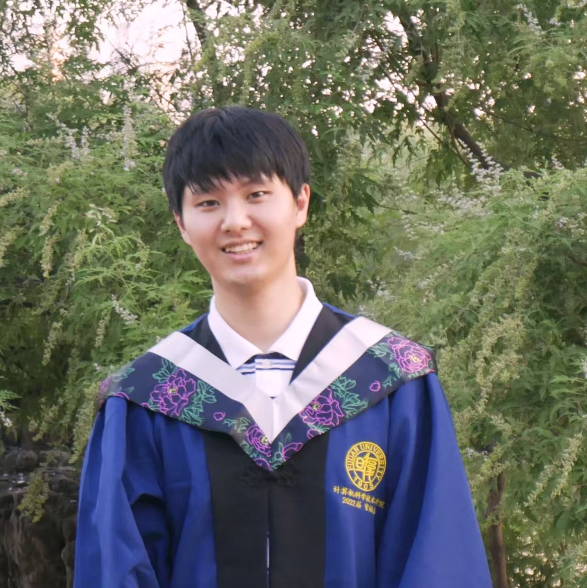

RT-Remover: A Real-Time Video Object Removal by Composing Tracking and Removal in Auto-Regressive Diffusion Transformers
Bojia Zi, Penghui Ruan, Xianbiao Qi, Youze Huang, Rong Xiao, Kam-Fai Wong

Final-year Ph.D. Candidate
Previously, I got my master's degree and bachelor's degree from Fudan University and Shandong University in 2022 and 2019, respectively. I am seeking research roles in video pretraining, unified multimodal models, and LLM pretraining.
Background
Supervisor: Kam-Fai Wong
Research Intern, LLM PEFT
Research Intern, VLM Pretraining
Supervisors: Yu-Gang Jiang and Xingjun Ma
Supervisor: Weiguo Liu
Publications
My work spans video editing, LLM and multimodal generation, video object removal, deepfake detection, datasets, and efficient model adaptation.
Bojia Zi, Penghui Ruan, Xianbiao Qi, Youze Huang, Rong Xiao, Kam-Fai Wong
Bojia Zi*, Xiaoyan Yang*, Yu Zhou, Lihan Zhang, Haibin Huang, Bin Liang, Kam-Fai Wong, Chi Zhang, Xuelong Li
Lin Luo, Xin Wang, Bojia Zi, Shihao Zhao, Xingjun Ma, Yu-Gang Jiang
Bojia Zi*, Penghui Ruan*, Marco Chen, Xianbiao Qi, Shaozhe Hao, Shihao Zhao, Youze Huang, Bin Liang, Rong Xiao, Kam-Fai Wong
Bojia Zi*, Weixuan Peng*, Xianbiao Qi, Jianan Wang, Shihao Zhao, Rong Xiao, Kam-Fai Wong
Bojia Zi, Shihao Zhao, Xiaokang Qi, Jianlong Wang, Yukai Shi, Qianyu Chen, Bin Liang, Kam-Fai Wong, Lei Zhang
Bojia Zi, Xiaokang Qi, Lingzhi Wang, Jianlong Wang, Kam-Fai Wong, Lei Zhang
Bojia Zi*, Shihao Zhao*, Xingjun Ma, Yu-Gang Jiang
Bojia Zi, Minghao Chang, Jingjing Chen, Xingjun Ma, Yu-Gang Jiang
Youze Huang*, Penghui Ruan*, Bojia Zi*, Xianbiao Qi, Jianan Wang, Rong Xiao
Youze Huang*, Penghui Ruan*, Bojia Zi*, Xianbiao Qi, Rong Xiao
Penghui Ruan*, Bojia Zi*, Xianbiao Qi, Youze Huang, Rong Xiao, Pichao WANG, Jiannong Cao, Yuhui Shi
Penghui Ruan, Bojia Zi, Xianbiao Qi, Youze Huang, Rong Xiao, Pichao WANG, Jiannong Cao, Yuhui Shi
Shihao Zhao, Yitong Chen, Zeyinzi Jiang, Bojia Zi, Shaozhe Hao, Yu Liu, Chaojie Mao, Kwan-Yee K. Wong
Shaozhe Hao, Xiaoxiao Liu, Xianbiao Qi, Shihao Zhao, Bojia Zi, Rong Xiao, Kai Han, Kam-Fai Wong
Jiahao Lin, Weixuan Peng, Bojia Zi, Yifeng Gao, Xianbiao Qi, Xingjun Ma, Yu-Gang Jiang
Shihao Zhao, Shaozhe Hao, Bojia Zi, Huaizhe Xu, Kwan-Yee K Wong
Academic Service
Reviewer
Awards
Teaching
Skills
PyTorch, TensorFlow, Caffe, Python
Mandarin (Native Speaker), English IELTS 7.0
Contact